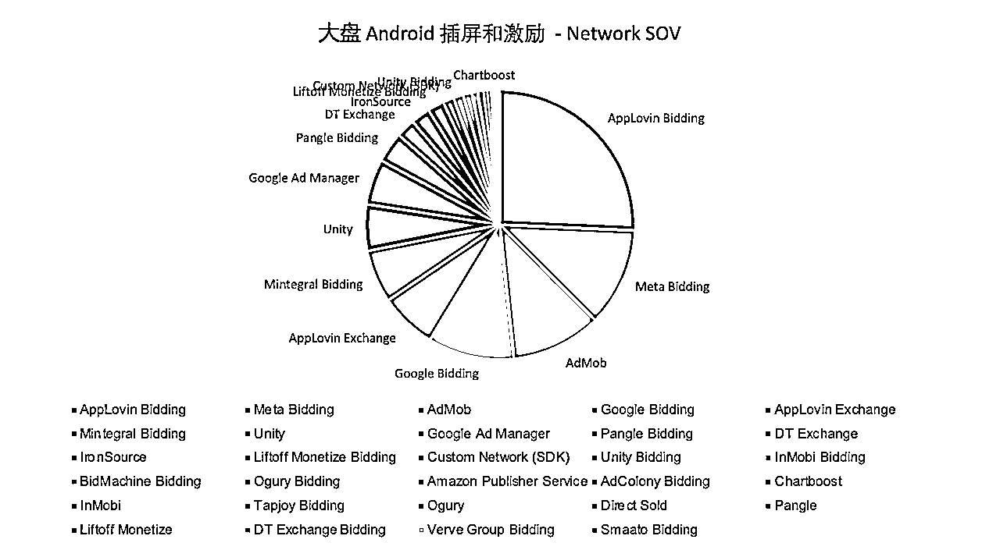
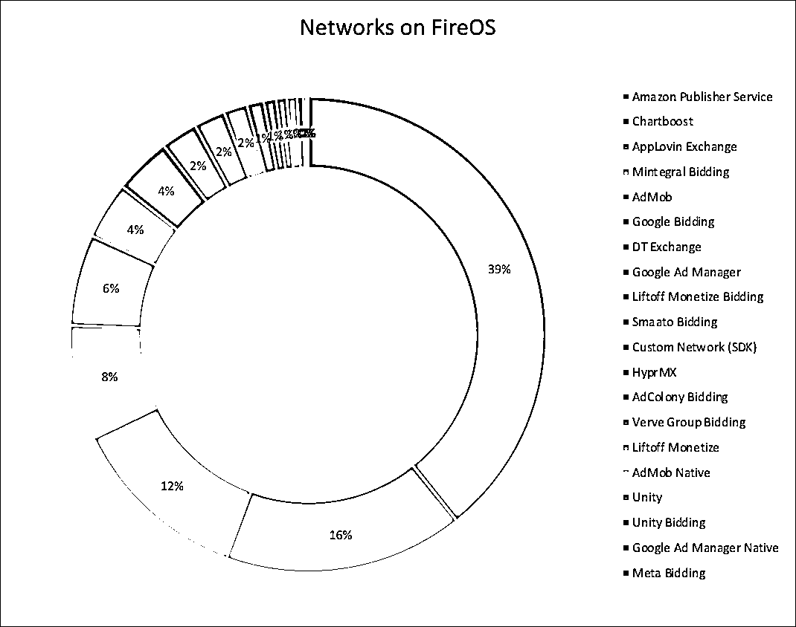
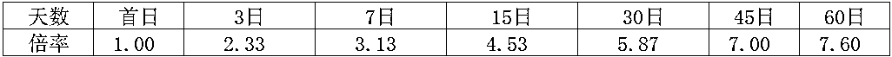
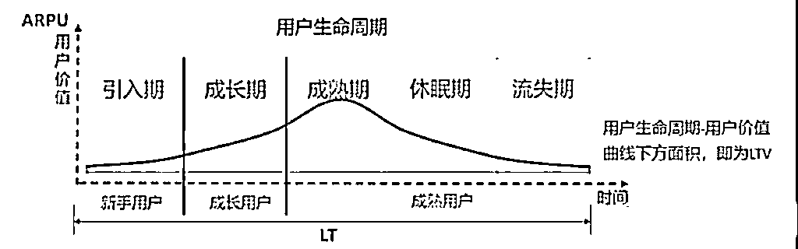
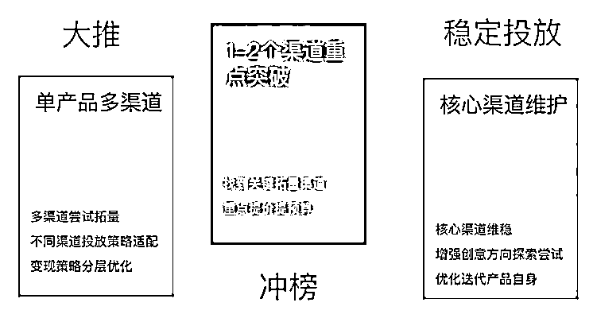

来源：https://lakyojchrz.feishu.cn/docx/Ejc0dFHOQobgGzxDmurc8sVxnXb
引言：
不知大家是否好奇如何发行一款风靡全球的游戏？一般会有哪些流程以及需要关注哪些指标？
时间有限，我将简要介绍海外游戏发行要点（其他品类可参考），欢迎同行补充~
市场调研：俗话说知此知彼，方能百战百胜。市场调研是游戏发行的第一步，它帮助我们了解市场环境、竞品情况以及目标用户群体。近几年呈现出重度游戏轻度化，以及休闲游戏往中重度发展趋势，不同题材的融合以及创新玩法需要重点关注。
游戏圈推荐公众号：
以下是我常关注的号，经常会分享些亮眼的新游、游戏拆解、对话游戏制作人等内容，值得日常刷刷
曾嵘胡扯的地方、SensorTower、GameLook、罗斯基、出海斯基、游戏陀螺、游戏日报、游戏葡萄、DataEye、dataai CN、游戏产业报告、游戏茶馆、GameRes游资网、姑婆那些事、竞核、手游那点事等等
推荐工具：
如下平台可满足竞品分析、分品类榜单、广告素材分析等日常需求。
| 平台名称 | 网址 | 服务范围 | 优势 | 劣势 |
|---|---|---|---|---|
| 广大大 | https://www.socialpeta.com/ | 国内外 | 1. 提供广泛的广告素材资源； | 1. 主要覆盖海外市场，国内数据积累有限； 2. 订阅费用较高，且限制设备数量； 3. 用户界面操作不便。 |
| 热云 | https://www.insightrackr.com/ | 国内外 | 1. 价格实惠，支持多人共享； | 素材数据精确度略低于广大大。 |
| Sensor Tower | https://sensortower.com/ | 海外 | 1. 素材查询界面设计优良； | 设备和邮箱双重绑定，对小团队而言成本较高。 |
| App Annie（data.ai） | https://www.data.ai/ | 海外 | 提供深入的应用性能、市场趋势和用户行为分析，优化应用策略。（现已被Sensor Tower收购） | 数据不太精准 |
| DataEye | https://www.dataeye.com | 国内外 | 能深入分析广告投放背后的运营信息。 | - |
| AppGrowing | https://data.appgrowing.cn/ | 国内外 | 1. 界面优化，满足优化师需求；2. 操作便捷，适合竞品调研； 3. 价格实惠，无设备和账号限制。 | 素材覆盖范围和全面性略逊于广大大。 |
| Similar web | https://similarweb-china.com/ | 国内外 | 具备分析竞争对手网站和应用的关键功能，能够深入洞察流量、用户行为和流量来源等方面 | - |
| 头条广告情报 | https://bigbigads.io/main/ads | 国内 | 提供游戏、应用和电商广告素材查询；支持下载素材和查看素材着陆页。 | 基础版免费（查询数量有限），高级版需要付费或者邀请好友获得。 |
| 七麦数据 | http://qimai.cn | 国内 | 提供App Store和安卓市场的应用基本信息和深入数据分析。 | - |
在当今同质化严重非常卷的市场环境下，测出便宜且合适的买量素材成为立项初期最为关键的一环，这里强调合适，是因为测出便宜的素材的同时，还需要关注产品留存和变现情况。（我们曾测出单价为平时1/3的素材，围绕这个素材去做了几次demo，然而次留都只有十几，最终放弃了这条素材）
常见问题：
广告归因平台选择
1.海外除了Google和Facebook外，大多数广告渠道要求使用第三方归因平台。
2.多数海外广告归因平台都提供了一个月的免费试用期，其中AppsFlyer和Adjust两家占据了大约80%-90%的市场份额。
3.不过也有像Kochava和Tenjin这样的小众，不但便宜功能又基本够用的，特别适合小的开发者。
常见归因平台及其特点：
| 归因平台 | 官网 | 服务范围 | 优势 | 劣势 |
|---|---|---|---|---|
| AppsFlyer | https://www.appsflyer.com/ | 国内+海外 | 提供快速、精准的归因分析和深度链接功能，ANR和崩溃率很少 | 价格昂贵 |
| Adjust | https://www.adjust.com/ | 海外 | 功能与AppsFlyer类似，但价格更具优势 | 部分高阶功能需单独额外付费 |
| Singular | https://www.singular.net/ | 海外 | 适合需要精细化管理大量广告渠道的企业 | 价格相对实惠 |
| Kochava | https://www.kochava.com/ | 海外 | 提供每月1万次免费转化的基础套餐， | 适合预算有限的小开发者 |
| Tenjin | https://tenjin.com/zh/pricing/ | 海外 | 提供免费的2000次月度归因量，付费版提供高级分析功能。 | 适合中小型企业 |
| Adspark | https://www.csjplatform.com/adspark | 国内 | 完全免费，可支持多方投放渠道，以及广告聚合以及内购收入回传，迭代较快客服响应支持也做得不错 | 可能存在数据安全问题（数据全都让平台知道了，利润空间变小~） |
| 热云（TrackingIO） | https://new.trackingio.com/#/home?apptype=wap&campaignid=d7dbd2242cf75f2922d3eade6e313487&cid=8048&null | 国内 | 基础功能免费，比较合适内购较重的产品使用 | 不太适合IAA类产品，可提供分析的数据颗粒度较粗糙。按流量收费。 |
| 友盟 | https://www.umeng.com/ | 国内 | 基础功能免费，行业的老前辈，除了数据统计还发展了很多其他的相关业务 | - |
| TalkingData | https://www.talkingdata.com/product-AdTracking.jsp?languagetype=zh_cn | 国内 | 基础功能免费，涉及行业广泛，游戏数据统计在友盟基础上有一定的进步 | - |
调优目标：平衡产品的留存和变现能力，最终保证LTV>CPI（做产品不是搞慈善，赚钱才能长久活下去）
留存优化：
广告变现：
MAX聚合不同系统，各渠道占比情况：



聚合选择
看到圈友@Louisa 曾写过关于海外聚合精华帖《高效使用广告聚合 & 优化竞价策略，让海外应用广告收入提升 30%》https://scys.com/articleDetail/xq_topic/218242112828881
两年过去，变现领域发生了翻天覆地的变化，全面Bidding时代已经来临。关于聚合选择，按照市场占有率以及实际表现供参考：
| 聚合 | 服务范围 | 品类 | 优势 | 劣势 |
|---|---|---|---|---|
| Admob | 海外 | 工具类 | 可与Google Adwords、Firebase等谷歌自己产品直接打通 | 对其他家不友好，没什么填充。除Meta外的bider的收入参与分成。 |
| MAX | 海外 | 游戏类等 | 官聚渠道多，ecpm高 | 运营可操作空间较小，数据颗粒度较粗 |
| Ironsource | 海外 | — | 支持各种维度的数据，支持多种运营策略操作 | IS自身表现太差，整体ecpm比较差 |
| Topon | 国内+海外 | 工具居多 | 1、支持精细化运营策略操作 2、自家的ADX效果尚可 | 主要只有国内开发者知晓 |
| Tradplus | 国内+海外 | 工具+游戏 | 提供Saas服务 | 主要只有国内开发者知晓 |
| Gromore（穿山甲） | 国内 | 网赚 | 迭代很快，有很多隐藏功能需要找AM开白名单即可试用 | 对自家流量倾斜 |
| ToB（Sigmob） | 国内 | 游戏居多 | 自家独有按用户展示频次做用户分层 | - |
内购：
素材准备：优化广告素材对于吸引用户和降低买量成本至关重要 。具体的设计所需工具圈友也已有详细整理
优化素材的手段：
投放回本估算：
目的：
计算回收倍率：


那么相对应倍率为：

可以看出，这款产品留存衰退非常快，但7天后留存衰减明显减缓，D45天已经回本。往后就是利润了。
LT计算：
根据留存数据模拟留存曲线，估算人均CPI与每日ARPU计算回本周期。
LTV = LT * Darpu

高效在线拟合工具：https://tools.logiconsole.com/
内容本地化
推荐工具:
技术本地化
国内商店：硬核渠道（华为小米oppovivo）、TapTap、好游快爆、233乐园、应用宝、百度手机助手、360手机助手、豌豆荚、魅族、联想、三星商店
海外商店：GooglePlay、Apple store、Amazon Appstore、Aptoide、三星Galaxy Store、华为AppGallery、OPPO App Market、Vivo App Store 韩国：One store、俄罗斯：Ru store
素材创意设计与制作
投放方向工作

广告批量发布工具：bidalgo、XMP
海外投放渠道：
Google（量最大最多）、Meta（用户年龄偏大、付费较高)、Unity、Applovin、Mintegral（适合IAA游戏）、Tiktok（用户偏年轻）、Yandex\VK(俄罗斯）、CPE渠道（Mistplay、Adjoe）等
国内投放渠道：
巨量、腾讯（偏中重度）、快手、硬核厂商（华为小米OPPOVIVO）等
App Store和Google Play在ASO方面有一些关键差异。App Store独有关键词和副标题这两个元素，而Google Play则允许添加一个简短描述字段，这是App Store不具备的。在Google Play，关键词的索引方式与Google搜索相似，会考虑应用的所有文本元素，因此建议在各个字段中重复关键词3-5次以提升排名。相反，在App Store中，重复关键词并不能提升应用的搜索排名，因此这种做法是无效的。
针对这两个平台，以下是影响应用排名的关键因素：

| ASO优化目标 | 描述 | 推荐工具 |
|---|---|---|
| 关键词优化 | 获取APP在海外市场的关键词排名、得分、推荐关键词、用户评分、转化率等数据。 | Mobile Action、Meatti、App Radar、Priori Data、ASOdesk、TheToo、Keyword Tool |
| 产品页面优化 | 提供ASO报告，分析APP产品，给出标题、截图、图片、视频、描述等优化建议。 | AppTweak、Meatti |
| 评分分析 | 了解用户对APP产品的评论，分析用户喜好。 | Appbot、Apptentive、Mobile Action、TheTool |
| A/B测试 | 提供上线前优化建议，测试不同图标、截图、视频说明对应用安装的影响。 | Splitmetrics、Store Maven、TestNest |
| 搜索广告优化 | 优化Apple Search Ads广告，跟踪用户从广告点击到应用内操作的路径，合理利用预算。 | SearchAdsHQ |
KOL营销
推荐工具：
推荐工具：BuzzSumo, NinjaOutreach，Famepick、 CelebExperts、talentresources
在游戏发行中，数据分析是至关重要的环节，它帮助我们理解玩家行为、优化游戏体验，并推动游戏的成功。以下是一些关键的数据分析方法，以及它们在游戏发行中的应用：
用户行为分析工具
| 工具名称 | 应用场景 | 优势 | 产品类型 | 官网链接 |
|---|---|---|---|---|
| Google Analytics | 网站流量分析、移动应用分析、广告效果跟踪 | 免费使用，全面数据跟踪，与Google服务集成 | 网站、移动应用、电商平台 | https://developers.google.com/analytics |
| Firebase Analytics | 移动应用数据分析、用户行为跟踪、应用内事件分析 | 实时分析，集成Firebase服务，免费使用 | 移动应用（尤其是Android应用） | https://firebase.google.com/docs/analytics |
| Apple App Analytics | iOS应用的下载和使用分析、用户行为跟踪、广告效果评估 | 原生集成，用户隐私保护，易于使用 | iOS应用 | https://developer.apple.com/app-store-connect/analytics/ |
| 数数科技 | 可深入了解用户行为，优化产品体验，提升用户留存和转化率。 | 实时数据分析、多维度分析、集成便捷 | 移动应用、小程序均可 | https://mtsyx.higgsyx.com/ |
| Mixpanel | 用户行为分析、漏斗分析、用户留存和转化分析 | 用户行为分析详细，实时数据，易于使用 | 移动应用、Web应用、SaaS产品 | https://mixpanel.com/ |
| Tableau | 数据可视化、商业智能分析、高级数据分析 | 强大的数据可视化，灵活的数据连接，高级分析功能 | 各种业务数据分析需求 | https://www.tableau.com/zh-cn |
1、随着国内游戏市场的日益饱和，众多开发者开始将目光投向海外，寻求新的增长机会。然而，随着越来越多的参与者加入这场全球竞争，海外市场的成本也在悄然上升，回本周期逐渐拉长，市场竞争愈发激烈。在这样的大环境下，游戏发行的复杂性和挑战性也在不断增加。
2、本文所分享的发行内容，仅仅是对游戏发行这一庞大话题的浅尝辄止。游戏发行是一个涉及众多环节的复杂过程，它不仅仅关乎市场运营和广告投放，还涉及到用户研究、创意设计、变现策略、社交媒体运营以及项目协调等多个部门的紧密合作。
3、每个部分的工作都值得深入探讨和研究。由于篇幅和时间的限制，本文只能对这些环节进行简要的介绍。但我相信，通过本文的分享，对游戏发行感兴趣的朋友至少可以对发行的基本流程有一个大致的了解。